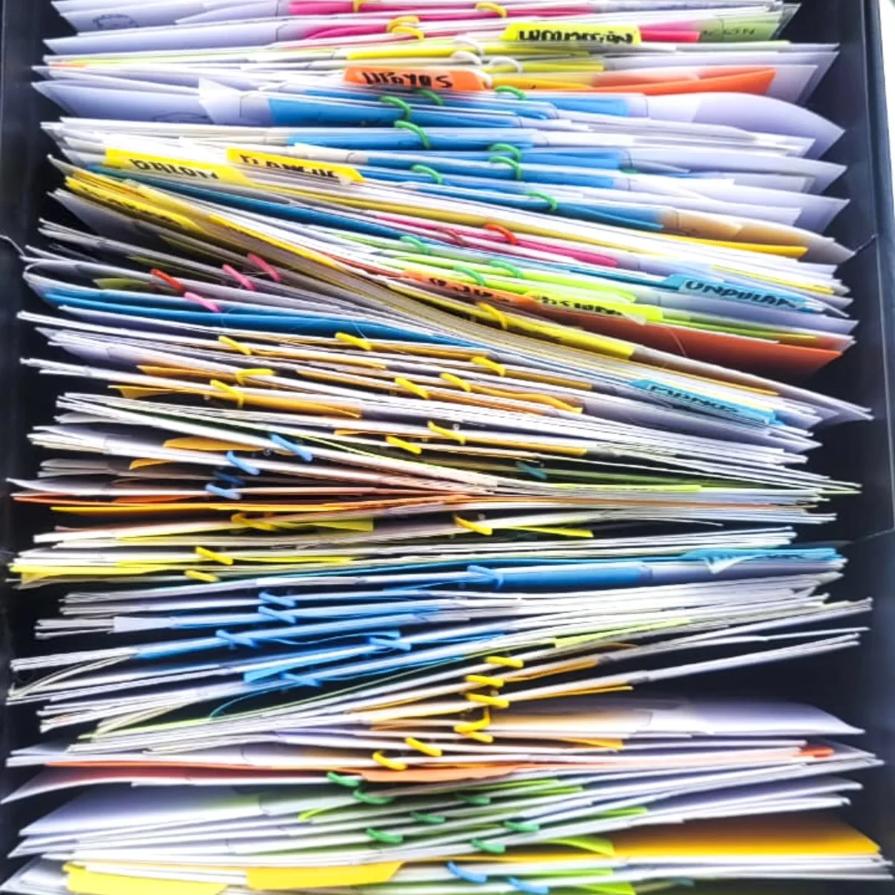
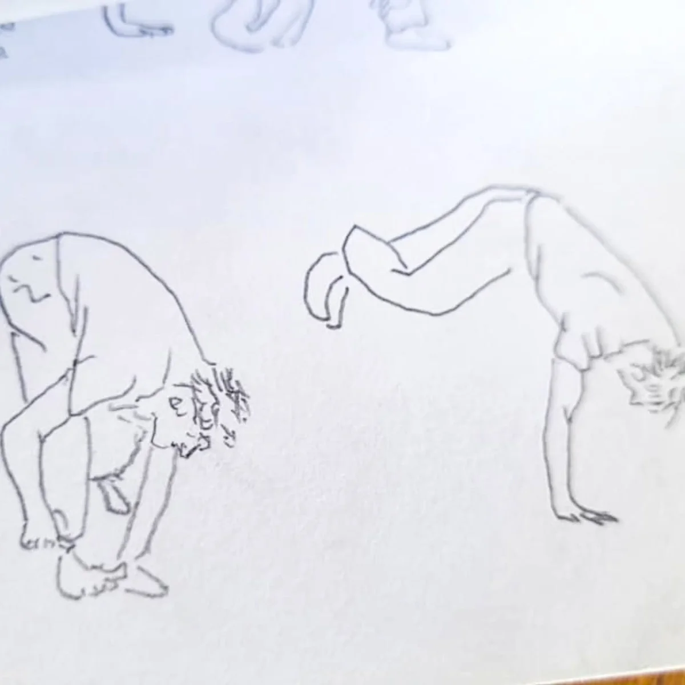

¿Qué hacemos cuando entramos a una sala a entrenar?
Mirar lo que hace un ejercicio
La investigación parte de un proyecto de grado que reunió prácticas de formación universitaria y extrauniversitaria en una constelación. Para observarlas de otro modo, dejó en suspenso sus nombres, historias y filiaciones pedagógicas: la pregunta era cómo actuaban.
Al agruparlas por sus modos de acción aparecieron ejercicios narrativos, de estabilidad, rítmicos y de percepción, entre otros. Así comenzó una cartografía funcional del entrenamiento.
En diálogo con la noción de tecnologías del yo de Michel Foucault, el ejercicio se entiende como una práctica de transformación: activa estados y produce disposiciones físicas, sensibles y políticas.
Devolver el mapa al cuerpo
Para pensar los ejercicios hubo que separarlos de su experiencia. El siguiente paso fue reincorporarlos a través del entrenamiento y organizar ese archivo en una arquitectura flexible:
- Restablecer el eje
- Reacción
- Trabajo espacial
- Composición
- Improvisaciones
- Meditación
- Restablecimiento
Cada fase se despliega en tres dimensiones: individual, colectiva y vocal. Los Portulanos son guías para navegar territorios desconocidos del cuerpo; mapas que permiten orientarse mientras cambia el territorio.
Practicar la vida
El entrenamiento es también una práctica estética de la existencia: afinar una sensibilidad, una forma de atención y una manera de estar. Trabajar la propia vida como una materia que se compone a través de ejercicios, ritmos, respiraciones, movimientos y relaciones.
Portulanos es una herramienta pedagógica y autodidáctica para comprender qué hacen las prácticas de entrenamiento e improvisación, y ensayar las posibilidades que abren.
Mapas que no indican un destino, sino que permiten ensayar formas de existencia.
Líneas para navegar
Las fichas, los videos, las fotos y las diferentes formas de archivo reúnen las posibilidades de trabajo y acompañan la exploración del cuerpo y de la voz.

